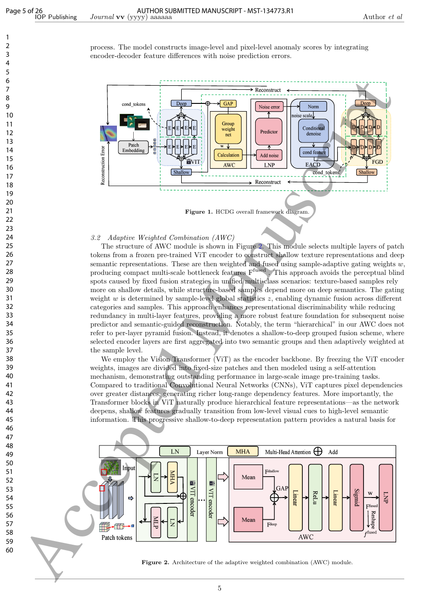
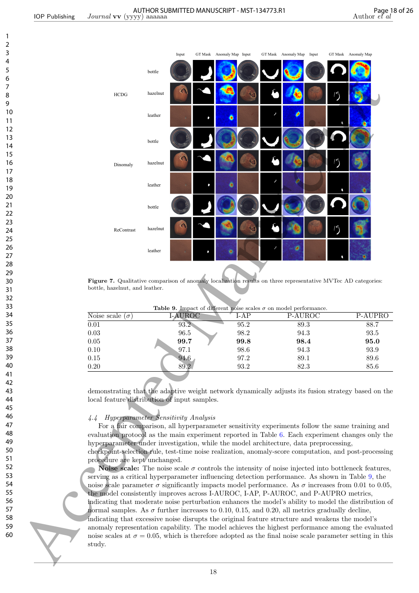

Robotics Research Reader · Stage 1
HCDG: Unified Multiclass Unsupervised Anomaly Detection with Adaptive Weighted Combination and Error-Aware Conditional Denoising
材料覆盖范围：完整阅读当前 PDF 的摘要、正文、图表、实验、限制与结论，并视觉核对本页嵌入的关键原文页。原文件为
Luo+et+al_2026_Meas._Sci._Technol._10.1088_1361-6501_ae9e56(科研通-ablesci.com).pdf。本页严格限于 Stage 1：只还原论文故事线，不读取代码，不用第三方解读补写。一、论文一句话在做什么
概括HCDG 面向工业视觉多类别统一无监督异常检测，把浅层纹理与深层语义自适应融合，并用噪声预测误差控制特征空间条件去噪，再由特征引导解码器重建正常特征并生成图像级/像素级异常分数。 （Abstract；Introduction；Method overview）
二、Research Problem
具体问题：只用正常样本训练一个模型，同时检测多类工业产品异常并定位缺陷。 （Abstract；Introduction）
场景：MVTec AD、VisA 2D 工业图像；这不是 LiDAR/机器人点云论文。 （Abstract；Introduction）
重要性：逐类别模型的存储、部署和维护成本高。 （Abstract；Introduction）
后果：多类正常模式混合易出现近似 identity mapping，削弱异常表征。 （Abstract；Introduction）
三、Existing Methods & Gap
| 方法类别 | 原本怎么解决 | 作者指出的不足及影响 |
|---|---|---|
| 逐类别无监督模型 | 每类单独建正常分布 | 类别多时扩展、维护和存储成本高。 |
| 统一多类重建 | 一个模型学习所有正常类别 | 正常模式重叠导致近似恒等映射，异常也可能被重建。 |
| 固定层特征融合 | 平均/固定权组合浅深特征 | 不同类别和样本所需纹理/语义比例不同。 |
概括作者认为真正缺少的是：不同类别和样本所需纹理/语义比例不同。 （Introduction；Related Work）
四、Core Observation / Insight
- 浅层特征偏纹理，深层特征偏语义；不同类别和样本应采用不同融合权重。 （Introduction；Method）
- 正常与异常位置的噪声预测误差不同，可用误差来决定保留多少扰动，从而放大异常区域可分性。 （Introduction；Method）
- 因此作者把 adaptive weighted combination（AWC）与 error-aware conditional denoising（EACD）串联。 （Introduction；Method）
五、Method：只看宏观逻辑
概括Input：正常训练图像；DINOv2 提取多层特征。 （Method；framework figure）
概括AWC 学习样本级浅/深特征权重，形成统一多类表示。 （Method；framework figure）
概括Lightweight Noise Predictor 预测注入噪声，并用预测误差定位可能异常的位置。 （Method；framework figure）
概括EACD 按误差条件控制 denoising；FGD 用多头 cross-attention 重建正常特征。 （Method；framework figure）
概括融合重建误差与噪声预测误差，Output：图像级异常分数与像素热图。 （Method；framework figure）


概括相比已有方法，真正发生变化的核心位置是：Lightweight Noise Predictor 预测注入噪声，并用预测误差定位可能异常的位置。 （Method）
六、Contributions
- Method：提出统一多类 HCDG 框架，缓解 identity mapping 与类间正常特征重叠。 （Introduction，contributions）
- Method / Modeling：提出 AWC、轻量噪声预测与 EACD。 （Introduction，contributions）
- Method：提出 FGD，在纹理和语义层建立 encoder–decoder 对应。 （Introduction，contributions）
- Experiment：在 MVTec AD 与 VisA 上做统一协议比较、效率、参数和消融。 （Introduction，contributions）
七、Experiments
- Dataset：MVTec AD、VisA。 （Experimental setup）
- Baselines：UniAD、ReContrast、ViTAD、Dinomaly、DiAD、MambaAD、SimpleNet 等。 （Experimental setup）
- Metrics：I-AUROC/I-AP/I-F1-max 与 P-AUROC/P-AP/P-F1-max/P-AUPRO；另测 Params/FLOPs/FPS/GPU memory。 （Experimental setup）
- 硬件：2×RTX 4090；有消融、参数、效率、定性和定量实验。 （Experimental setup）
实验 1：MVTec AD：I-AUROC 99.7%、I-AP 99.8%、I-F1-max 99.4%；像素级 P-AUROC 98.4%、P-AUPRO 95.0%。 （Experiments；相关 Figure/Table）
实验 2：效率表：HCDG 152.1M 参数（57.8M 可训练）、58.3 GFLOPs、32.5 FPS、3980 MB；作者称在准确率与效率间平衡良好。 （Experiments；相关 Figure/Table）
实验 3：Table 12：baseline I-AUROC/P-AUPRO 89.3/87.2，逐步加入 AWC、LNP、EACD、FGD 后达到 99.7/95.0。 （Experiments；相关 Figure/Table）
实验 4：Table 13：AWC 的 P-AUPRO 95.0，高于 shallow-only 87.6、deep-only 90.3 和简单平均 93.0。 （Experiments；相关 Figure/Table）
实验 5：直接观察参数实验：10k iterations 最佳；λ=0.5 最佳；3-layer LNP 优于 2/5-layer。 （Experiments；相关 Figure/Table）
八、Limitations
作者明确承认的 limitation
作者明确承认：依赖冻结 DINOv2、固定中间层选择和预设噪声参数，可能限制大 domain shift 下适应性；只在两个 2D 工业异常 benchmark 上验证。 （Discussion / Conclusion / failure case）
从实验结果中直接可见，但作者没有明确称为 limitation 的现象
直接观察直接观察：完整 HCDG 的总参数量 152.1M，并非轻量整体模型；“lightweight”限定在噪声预测器。 （相关 Figure/Table）
九、Future Work / Research Implications
探索动态层选择与噪声参数调整等更自适应高效的特征建模，并在更多工业数据与成像模态上验证跨域泛化。 （Conclusion）
十、论文逻辑链
概括现实问题：工业异常稀少且多类别逐类建模成本高。
概括现有方法：逐类模型或统一重建。
概括不足：统一模型易恒等映射，固定融合不能适应类别差异。
概括观察：浅深特征互补，噪声预测误差能区分位置。
概括思想：自适应融合并以误差条件化去噪。
概括方法：DINOv2 + AWC + LNP/EACD + FGD。
概括验证：MVTec AD/VisA、效率、参数与逐模块消融。
概括结论：作者报告统一多类检测和定位的竞争性表现。
十一、第一遍阅读结束后，我应该记住的东西
- 概括解决工业视觉统一多类无监督异常检测，不属于 LiDAR 点云任务。
- 概括核心 gap 是多类正常模式重叠导致恒等映射与异常重建。
- 概括最关键 insight 是浅深层需自适应融合，噪声预测误差可控制去噪。
- 概括核心变化是 AWC 与 EACD/FGD 的组合。
- 概括最重要结果是 MVTec AD 上 99.7% I-AUROC 与 95.0% P-AUPRO。
十二、暂时不要深入的内容
- 概括AWC 权重网络与正则（Sec. 3.2；Fig. 2）。
- 概括LNP 和误差图构造（Sec. 3.3；Fig. 3）。
- 概括EACD 训练/推理差异与 λ（Sec. 3.4；Fig. 4）。
- 概括FGD cross-attention、异常分数聚合与 checkpoint 口径。